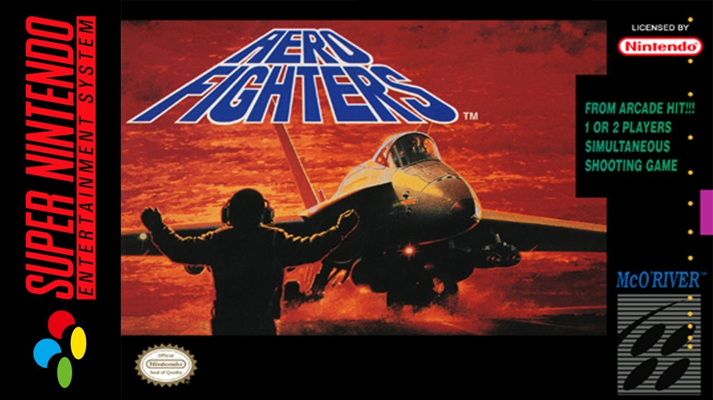
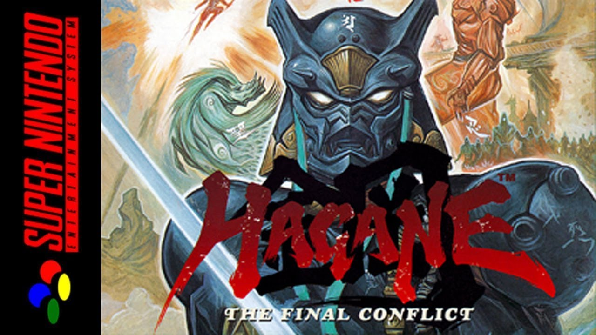
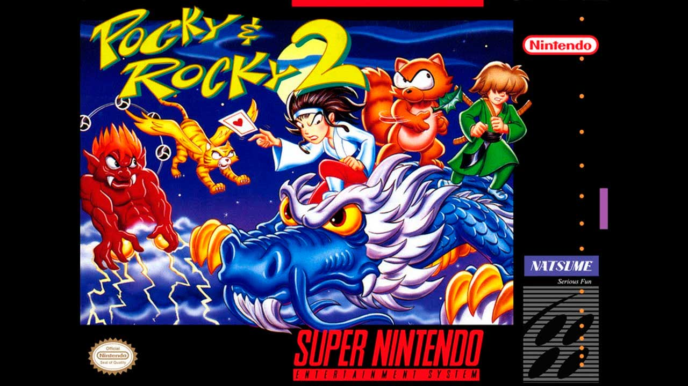

Jogos mais valiosos da Nintendo
Aero Fighters ($1.012)

No comando de aviões militares representantes de várias nacionalidades, o jogador deve lutar contra as forças inimigas ao longo de diversas fases. Cada avião tem os seus pontos fortes e fracos como velocidade e artilharia. A potência do ataque pode ser aumentada através de power-ups que aparecem após destruir alguns inimigos. Existe também um ataque especial que destrói todos os inimigos da tela, porém só pode ser usado um número limitado de vezes.
Hagane: The Final Conflict ($908)

Hagane apresenta ação de rolagem lateral e jogabilidade de plataforma e combina elementos de ninjas e samurais japoneses tradicionais com um cenário futurista. O jogador controla Hagane, um ciborgue ninja, e pode alternar entre quatro armas diferentes: uma espada, corrente, shuriken e granadas. Além disso, também há ataques mágicos limitados disponíveis que limpam a tela dos inimigos.
Pocky and Rocky 2 ($457)

O jogo é jogado em uma visão de cima para baixo, apresentando muitos elementos de jogos clássicos de shoot 'em up, mas dando ao jogador livre movimento de oito direções. O jogador um controla o protagonista principal, Pocky, que ataca atirando talismãs ofuda (referidos como "cartas" nas versões em inglês). Pocky pode pegar itens para melhorar o seu poder de ataque e novas roupas para se proteger de danos, bem como jogar o personagem do jogador 2 e usar magia. O Jogador 2 assume um papel de coadjuvante como um dos amigos de Pocky, cada um possuindo um ataque único e vidas ilimitadas.
Para os preços mais atualizados,
clique aqui